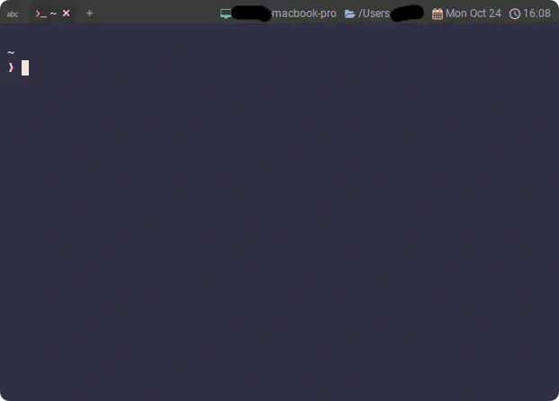
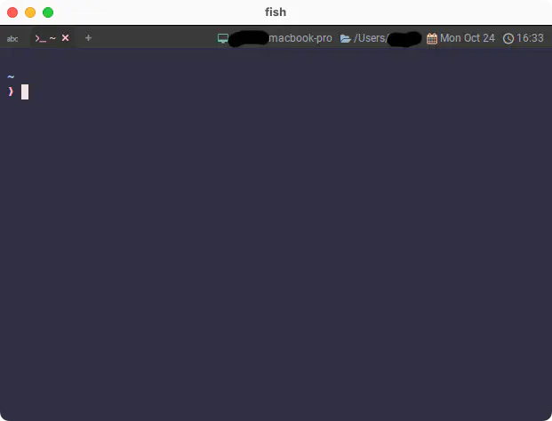
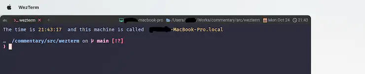
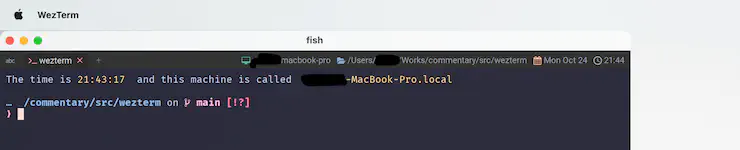
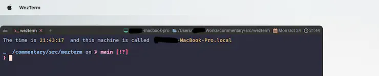

Window Decorations
なんか、こんなものがあるらしい...🤔
Configures whether the window has a title bar and/or resizable border.
ウィンドウにタイトルバーとリサイズ可能なボーダーを設けるかどうかを設定する。
パラメータは、このように示されていますね。
| flag | description |
|---|---|
| "NONE" | disables titlebar and border (borderless mode) タイトルバーとボーダーを無効にします（ボーダーレスモード）。 |
| "TITLE" | disable the resizable border and enable only the title bar サイズ変更可能なボーダーを無効にし、タイトルバーのみを有効にします。 |
| "RESIZE" | disable the title bar but enable the resizable border タイトルバーを無効にし、サイズ変更可能なボーダーを有効にします。 |
| "TITLE | RESIZE" | Enable titlebar and border. This is the default. タイトルバーとボーダーを使用可能にします。これはデフォルトです。 |
タイトルバーを無効にするのはなんか面白そう。

...いいね❗🤩
あー、でも、わたしたまにマウス操作で最小化ボタン使いたくなることあんだよねー、ちょっと辛い😅
今回はごめんなさいかなー。
...。
...。
なんて言うわけないじゃん⁉️😝
Configuring Mouse Assignments
You can define mouse actions using the mouse_bindings configuration section:
マウスアクションは、mouse_bindings設定セクションを使用して定義することができます:
またちょっとファイルを分けましょう。mousebinds.luaみたいな。
もうこのまま中身まで書いちゃいます😸
local act = require('wezterm').action
return {
mouse_bindings = {
{
event = { Down = { streak = 1, button = 'Left' } },
mods = 'NONE',
action = act.EmitEvent 'show-title-bar',
},
},
}
カスタムイベントはevent.luaの方にまとめます。
wezterm.on('show-title-bar', function(window, pane)
local overrides = window:get_config_overrides() or {}
overrides.window_decorations = 'TITLE | RESIZE'
window:set_config_overrides(overrides)
end)
いつも通り、wezterm.luaから読み込みます。keybindsと同じ流れ😌
これで一回動かしてみましょう。ウィンドウをクリックすると...、

タイトルバーが現れました。やったね😆
例えばNeovimみたいな、マウス操作に対応しているアプリケーションを動かしてる時だと、
そちらに操作を奪われてしまうようで、タイトルバーは現れません。
Neovimであれば、以下のようにすればマウス操作を無効化できるので、この状態ならバッチリです👍
vim.api.nvim_set_option('mouse', '')
ただ、マウス操作で手軽に文章を拾いたいことがあるので、わたしは入れてません🥳
でもこれだけだと、出したら出しっぱなしでなんか締まりませんね😮
やっぱり今回はごめんなさいかなー。
...。
...。
なんて言うわけないじゃん⁉️😝
ここでも window-focus-changed
function DisableWindowDecorations(window, interval)
if interval then
wezterm.sleep_ms(interval)
end
local overrides = window:get_config_overrides() or {}
overrides.window_decorations = nil
window:set_config_overrides(overrides)
end
wezterm.on('window-focus-changed', function(window, pane)
if window:is_focused() then
return
end
DisableWindowDecorations(window)
end)
はい。ウィンドウのフォーカスを外すと引っ込むようにしてみました。
あ、前のページでも挙げてましたが、wezterm.onは同じイベントがいくつ被っても平気です😉
こんなんなんぼあってもええですからね。
wezterm.on can register multiple callbacks for the same event; internally an ordered list of callbacks is maintained for each event. When the event is emitted, each of the registered callbacks is called in the order that they were registered.
wezterm.on は、同じイベントに対して複数のコールバックを登録することができます; 内部的には、各イベントに対してコールバックの順序付きリストが維持されます。 イベントが発信されると、登録された各コールバックは、登録された順に呼び出されます。
え❓😮 DisableWindowDecorationsにあるintervalは何かって❓
かなわんなあ。最初に記述したshow-title-barイベントに少しだけ手を加えましょ😄
-- これを追加して...、
local TITLE_BAR_DISPLAY_TIME = 3000
wezterm.on('show-title-bar', function(window, pane)
local overrides = window:get_config_overrides() or {}
overrides.window_decorations = 'TITLE | RESIZE'
window:set_config_overrides(overrides)
-- これも追加する
DisableWindowDecorations(window, TITLE_BAR_DISPLAY_TIME)
end)
これでTITLE_BAR_DISPLAY_TIME時間経過後、勝手に消えるようになってるはずです。どうでしょう😆
え❓😮 DisableWindowDecorationsにあるsleep_ms()は何かって❓
かなわんなあ。ちょっと不自然な気がするけど、これしか無かってん...😿
wezterm.sleep_ms suspends execution of the script for the specified number of milliseconds. After that time period has elapsed, the script continues running at the next statement.
wezterm.sleep_ms は、指定されたミリ秒の間、スクリプトの実行を一時停止します。 その時間が経過した後、スクリプトは次の文で実行を継続する。
他になんかもっとええのあったら教えてな〜☺️
うちな〜、Raycast
1
のWindowManagement使てんねんけど、よーこんな感じできっちりウィンドウ詰めるやろ〜❓

タイトルバー出すやろ〜❓

そんでな〜、引っ込んだらこんなんなんねん。

なんでやねん🫱
...あれ❓上の問題、出たり出なかったりする...。なにが違うねんな〜❗